library(tidyverse)
library(mice)
library(VIM)11 An Introduction to Missing Data
11.1 Introduction
Handling missing data is the icky, unglamorous part of any statistical analysis. It is where the skeletons lie. There’s a range of options available, which are, broadly speaking:
- Delete the observations with missing covariates (this is a “complete case analysis”)
- Plug in some kind of reasonable value for the missing covariate. This is called “imputation.” We discuss three ways of doing this that are increasingly sophisticated and layered on each other:
- Mean imputation. Simply take the mean of all the observations where you know the value, and then use that for anything that is missing.
- Regression imputation. You generate regression equations describing how all the variables are connected, and use those to predict any missing value.
- Stochastic regression imputation. Here we use regression imputation, but we also add some residual noise to all our imputed values so that our imputed values have as much variation as our actual values (otherwise our imputed values will tend to be all clumped together).
- Multiply impute the missing data, by fully modeling the covariate and the missingness, and generating a range of complete datasets under this model. Here you end up with a bunch of complete datasets that are all “reasonable guesses” as to what the full dataset might have been. You then analyze each one, and aggregate your findings across them to get a final answer.
The first two general approaches are imperfect, while the third is often more work than the original analysis that we were hoping to perform. For this course, doing a 2a, 2b, or 2c are all reasonable choices. If you have very little missing data you can often get away with 1. We have no expectations that people will take the plunge into #3 (multiple imputation). In real life, people will often analyze their data with a complete case analysis and some other strategy, and then compare the results. In Education, if missingness is below 10% people usually just do mean imputation, but regression imputation would probably be superior.
This handout provides an introduction to missing data, and includes a few commands to explore and deal with missing data. In this document we first talk about exploring missing data (in particular getting plots that show you if you have any notable patterns in how things are missing) and then we give a brief walk-through of the 3 methods listed above.
We will the mice and VIM packages, which you can install using install.packages() if you have not yet done so. These are simple and powerful packages for visualizing and imputing missing data. At the end of this document we also describe the Amelia package.
Throughout we use a small built-in R dataset on air quality as a working example.
data(airquality)
nrow(airquality)[1] 153 head(airquality) Ozone Solar.R Wind Temp Month Day
1 41 190 7.4 67 5 1
2 36 118 8.0 72 5 2
3 12 149 12.6 74 5 3
4 18 313 11.5 62 5 4
5 NA NA 14.3 56 5 5
6 28 NA 14.9 66 5 6 summary(airquality[1:4]) Ozone Solar.R Wind Temp
Min. : 1.0 Min. : 7 Min. : 1.70 Min. :56.0
1st Qu.: 18.0 1st Qu.:116 1st Qu.: 7.40 1st Qu.:72.0
Median : 31.5 Median :205 Median : 9.70 Median :79.0
Mean : 42.1 Mean :186 Mean : 9.96 Mean :77.9
3rd Qu.: 63.2 3rd Qu.:259 3rd Qu.:11.50 3rd Qu.:85.0
Max. :168.0 Max. :334 Max. :20.70 Max. :97.0
NA's :37 NA's :7 11.2 Visualizing missing data
Just like with anything in statistics, the first thing to do is to look at our data. We want to know which variables are often missing, and if some variables are often missing together. We also want to know how much data is missing. The mice package has a variety of plots to show us patterns of missingness:
md.pattern(airquality)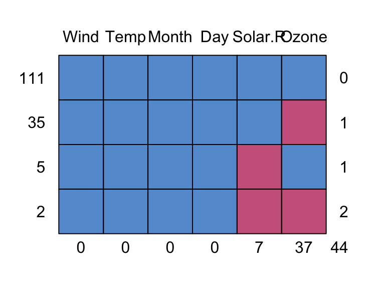
Wind Temp Month Day Solar.R Ozone
111 1 1 1 1 1 1 0
35 1 1 1 1 1 0 1
5 1 1 1 1 0 1 1
2 1 1 1 1 0 0 2
0 0 0 0 7 37 44This plot gives us the different missing data patterns and the number of observations that have each missing data pattern. For example, the second row in the plot says there are 35 observations that have a missing data pattern where only Ozone is missing.
Easier to understand patterns!
We can also just look at 10 observations to see everything that is going on. Here we take the first 10 rows of our dataset, but could also take a random 10 row with the tidyverse’s sample_n method.
airqualitysub = airquality[1:10, ]
airqualitysub Ozone Solar.R Wind Temp Month Day
1 41 190 7.4 67 5 1
2 36 118 8.0 72 5 2
3 12 149 12.6 74 5 3
4 18 313 11.5 62 5 4
5 NA NA 14.3 56 5 5
6 28 NA 14.9 66 5 6
7 23 299 8.6 65 5 7
8 19 99 13.8 59 5 8
9 8 19 20.1 61 5 9
10 NA 194 8.6 69 5 10We see that we have one observation missing two covariates and one each of missing Ozone only and Solar.R only.
11.2.1 The VIM Package
The VIM package gives some alternate plots to explore missing data patterns. For example, aggr():
aggr(airquality, col=c('navyblue','red'),
numbers=TRUE, sortVars=TRUE, labels=names(data),
cex.axis=.7, gap=3, prop=c(TRUE, FALSE),
ylab=c("Histogram of missing data","Pattern"))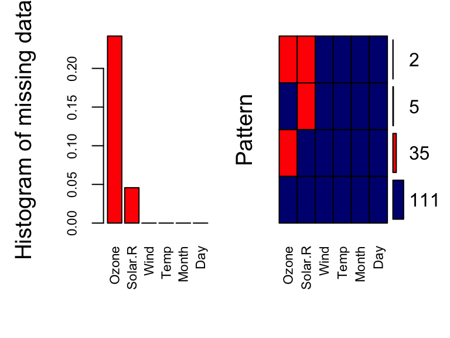
Variables sorted by number of missings:
Variable Count
Ozone 0.2418
Solar.R 0.0458
Wind 0.0000
Temp 0.0000
Month 0.0000
Day 0.0000On the left, we have the proportion of missing data for each variable in our dataset. We can see that Ozone and Solar.R have missing values. On the right, we have the joint distribution of missingness. We can see that 111 observations have no missing values. From those with missing values, the majority have missing values for Ozone, some have missing values for Solar.R and only 2 observations have missing values for both Ozone and Solar.R.
marginplot(airquality[1:2])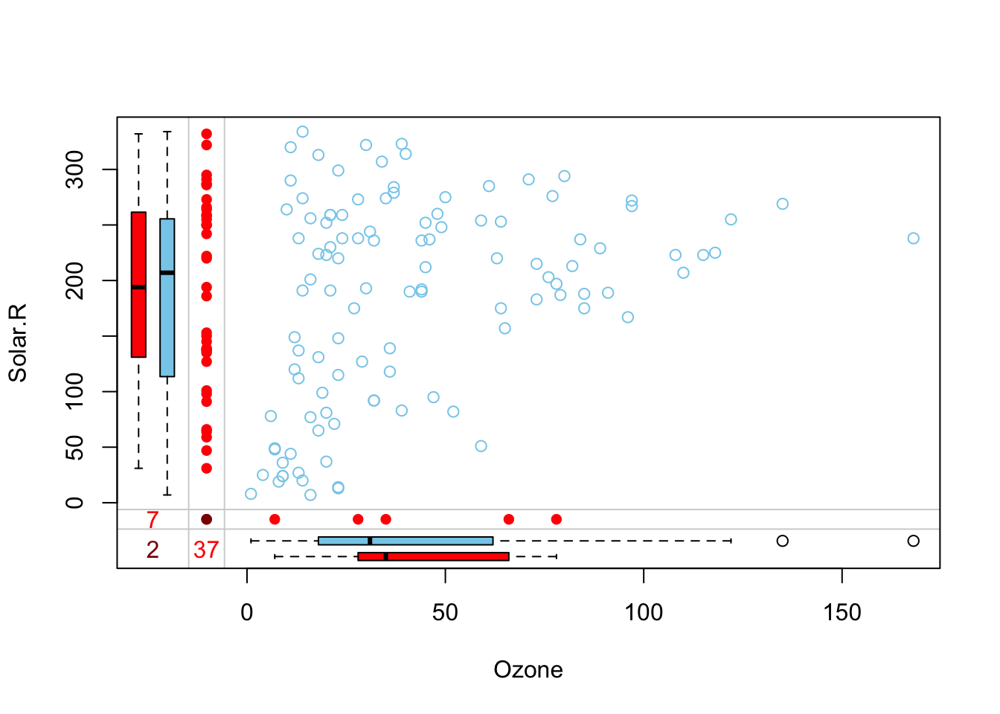
Here we have a scatterplot for the first two variables in our dataset: Ozone and Solar.R. These are the variables that have missing data. In addition to the standard scatterplot we are familiar with, information about missingness is shown in the margins. The red dots indicate observations with one or both values missing (so there can be a bunch of dots stacked up in the bottom-left corner). The numbers (37, 7, and 2 tells us how many observations are missing either or both of these variables).
11.3 Complete case analysis
Working with complete cases (dropping observations with any missing data on our outcome and predictors) is always an option. We have been doing this in class and section. However, this can lead to substantial data loss, if we have a lot of missingness and it can heavily bias our results depending on why observations are missing.
Complete case analysis is the R default.
fit <- lm(Ozone ~ Wind, data = airquality )
summary(fit)
Call:
lm(formula = Ozone ~ Wind, data = airquality)
Residuals:
Min 1Q Median 3Q Max
-51.57 -18.85 -4.87 15.23 90.00
Coefficients:
Estimate Std. Error t value Pr(>|t|)
(Intercept) 96.87 7.24 13.38 < 2e-16 ***
Wind -5.55 0.69 -8.04 9.3e-13 ***
---
Signif. codes: 0 '***' 0.001 '**' 0.01 '*' 0.05 '.' 0.1 ' ' 1
Residual standard error: 26.5 on 114 degrees of freedom
(37 observations deleted due to missingness)
Multiple R-squared: 0.362, Adjusted R-squared: 0.356
F-statistic: 64.6 on 1 and 114 DF, p-value: 9.27e-13Note the listing in the summary of number of items deleted. You can find out which rows were deleted:
## which rows/observations were deleted
deleted <- na.action(fit)
deleted 5 10 25 26 27 32 33 34 35 36 37 39 42 43 45 46 52 53 54 55
5 10 25 26 27 32 33 34 35 36 37 39 42 43 45 46 52 53 54 55
56 57 58 59 60 61 65 72 75 83 84 102 103 107 115 119 150
56 57 58 59 60 61 65 72 75 83 84 102 103 107 115 119 150
attr(,"class")
[1] "omit" naprint(deleted)[1] "37 observations deleted due to missingness"We have more incomplete rows if we add Solar.R as predictor.
fit2 <- lm(Ozone ~ Wind+Solar.R, data=airquality)
naprint(na.action(fit2))[1] "42 observations deleted due to missingness"We can also drop observations with missing data ourselves instead of letting R do it for us. Dropping data preemptively is generally a good idea, especially if you plan on using predict().
## complete cases on all variables in the data set
complete.v1 = filter( airquality, complete.cases(airquality) )
## drop observations with missing values, but ignoring a specific variable
complete.v2 = filter(airquality, complete.cases(select( airquality, -Wind) ) )
## drop observations with missing values on a specific variable
complete.v3 = filter(airquality, !is.na(Ozone))Once you have subset your data, you just analyze what is left as normal. Easy as pie!
11.4 Mean imputation
Instead of dropping observations with missing values, we can plug in some kind of reasonable value for the missing value, e.g. the grand/global mean. While this can be statistically questionable, it does allow us to use the information provided by that unit’s outcome and other covariates, without, we hope, unduly affecting the analysis of the missing covariate.
Generally, people will first plug in the mean value for anything missing, but then also make a dummy variable of whether that observation had a missing value there (or sometimes any missing value). You would then include both the original vector of covariates (with the means plugged in) along with the dummy variable in subsequent regressions and analyses.
11.4.1 Doing Mean Imputation manually
Manually, we can just replace missing values for a variable with the grand/global mean.
## make a new copy of the data
data.mean.impute = airquality
## select the observations with missing Ozone
miss.ozone = is.na(data.mean.impute$Ozone)
## replace those NAs with mean(Ozone)
data.mean.impute[miss.ozone,"Ozone"] = mean(airquality$Ozone, na.rm=TRUE)In a multi-level context, it might make more sense to impute using the group mean rather than the grand mean. Here’s a generic function to do it. Here we group by month:
## a function that replaces missing values in a vector
## by the mean of the other values
mean.impute = function(y) {
y[is.na(y)] = mean(y, na.rm=TRUE)
return(y)
}
data.mean.impute = airquality %>% group_by(Month) %>%
mutate(Ozone = mean.impute(Ozone),
Solar.R = mean.impute(Solar.R) ) We have mean imputed the Ozone column and the Solar.R column
11.4.2 Mean imputation with the Mice package
We can use the mice package to do mean imputation. The mice package is a package that can do some quite complex imputation, and so when you call mice() (which says “impute missing values please”) you get back a rather complex object telling you what mice imputed, for whom, etc. This object, which is a mids object (see help(mids)), contains the multiply imputed dataset (or in our case, so far, singly imputed). The mice package then provides a lot of nice functions allowing you to get your imputed information out of this object.
We first demonstrate this for the 10 observations sampled above. Mice is generally going to be a two-step process: impute data, get completed dataset.
For step 1:
imp <- mice(airqualitysub, method="mean", m=1, maxit=1)
iter imp variable
1 1 Ozone Solar.RWarning: Number of logged events: 1 impClass: mids
Number of multiple imputations: 1
Imputation methods:
Ozone Solar.R Wind Temp Month Day
"mean" "mean" "" "" "" ""
PredictorMatrix:
Ozone Solar.R Wind Temp Month Day
Ozone 0 1 1 1 0 1
Solar.R 1 0 1 1 0 1
Wind 1 1 0 1 0 1
Temp 1 1 1 0 0 1
Month 1 1 1 1 0 1
Day 1 1 1 1 0 0
Number of logged events: 1
it im dep meth out
1 0 0 constant MonthFor step 2:
cmp = complete(imp)
cmp Ozone Solar.R Wind Temp Month Day
1 41.0 190 7.4 67 5 1
2 36.0 118 8.0 72 5 2
3 12.0 149 12.6 74 5 3
4 18.0 313 11.5 62 5 4
5 23.1 173 14.3 56 5 5
6 28.0 173 14.9 66 5 6
7 23.0 299 8.6 65 5 7
8 19.0 99 13.8 59 5 8
9 8.0 19 20.1 61 5 9
10 23.1 194 8.6 69 5 10We see there are no missing values in cmp. They were all imputed with the mean of the other non-missing values. This is mean imputation.
Now let’s impute the full dataset.
imp <- mice(airquality, method="mean", m=1, maxit=1)
iter imp variable
1 1 Ozone Solar.R cmp = complete( imp )We next make a dummy variable for each row of our data noting whether anything was imputed or not. We use the ici (Incomplete Case Indication) function to list all rows with any missing values.
head( ici(airquality) )[1] FALSE FALSE FALSE FALSE TRUE TRUENote how we have a TRUE or FALSE for each row of our data.
We then store this as a covariate in our completed dataset:
cmp$imputed = ici(airquality)
head( cmp ) Ozone Solar.R Wind Temp Month Day imputed
1 41.0 190 7.4 67 5 1 FALSE
2 36.0 118 8.0 72 5 2 FALSE
3 12.0 149 12.6 74 5 3 FALSE
4 18.0 313 11.5 62 5 4 FALSE
5 42.1 186 14.3 56 5 5 TRUE
6 28.0 186 14.9 66 5 6 TRUE11.4.2.1 How well did mean imputation work?
Mean imputation has problems. The imputed values will all be the same, and thus when we look at how much variation is in our variables after imputation, it will go down. Compare the SD of our completed dataset Ozone values to the SD of the Ozone values for our non-missing values.
sd( airquality$Ozone, na.rm=TRUE )[1] 33 sd( cmp$Ozone )[1] 28.7Next, let’s look at some plots of our completed data, coloring the points by whether they were imputed.
library(ggplot2)
ggplot( cmp, aes(x=Ozone, col=imputed) ) +
stat_bin( geom="step", position="identity",
breaks=seq(-20, 200, 10) )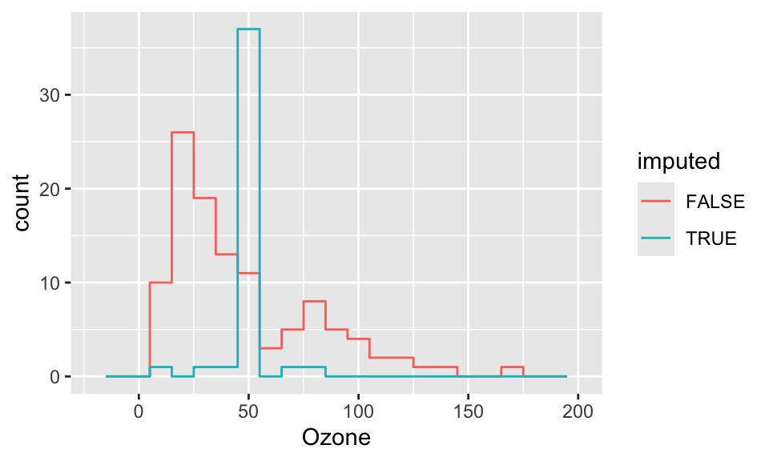
ggplot( cmp, aes(y=Ozone, x=Solar.R, col=imputed) ) +
geom_point() +
labs( y="Ozone (ppb)", x="Solar Radiation (lang)" )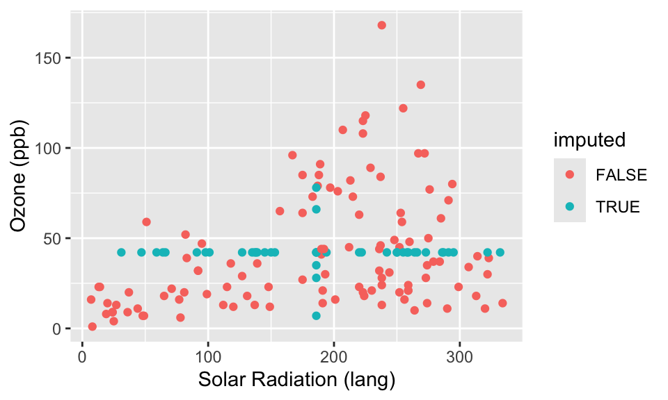
What we see in the above plots is that our imputed observations do not look like the rest of our data because one (or both) of their values always is in the exact center. This creates the “+” shape. It also gives the big spike at the mean for the histogram.
11.4.2.2 Important Aside: Namespaces and function collisions
We now need to discuss a sad aspect of R. The short story is, different packages have functions with the same names and so if you have both packages loaded you will need to specify which package to use when calling such a function. You can do this by giving the “surname” of the function at the beginning of the function call (like, I believe, the Chinese). This comes up because for us the method complete() exists both in the tidyverse and in mice. In tidyverse, complete() fills in rows of missing combinations of values. In mice, complete() gives us a completed dataset after we have made an imputation call.
It turns out that since we loaded tidyverse first and mice second, the mice’s complete() method is the default. But if we loaded the packages in the other order, we would get strange errors. To be clear, we thus tell R to use mice by writing:
cmp = mice::complete( imp )In general, you can detect such “namespace collisions” by noticing weird error messages all of a sudden when you don’t expect them. You can then type, for example, help( complete ) and it will list all the different completes around.
help( complete )Also when you load a package it will write down what functions are getting mixed up for you. If you were looking at your R code you would get something like this:
tidyr::complete() masks mice::complete()11.5 Regression imputation
Regression imputation is half way between mean imputation and multiple imputation. In regression imputation we predict what values we expect for anything missing based on the other values of the observation. For example, if we know that urban/rural is correlated with race, we might impute a different value for race if we know an observation came from an urban environment vs. rural. We do this with regression: we fit a model predicting each variable using the others and then use that regression model to predict any missing values.
We can do this manually, but then it gets very hard when multiple variables are missing for a given observation. The mice package is more clever: it does variables one at a time, and the cycles around so everything can get imputed.
11.5.1 Manually
Here is how to use other variables to predict missing values.
ic( airqualitysub ) Ozone Solar.R Wind Temp Month Day
5 NA NA 14.3 56 5 5
6 28 NA 14.9 66 5 6
10 NA 194 8.6 69 5 10 fit <- lm(Ozone ~ Solar.R, data=airqualitysub)
## predict for missing ozone
need.pred = subset( airqualitysub, is.na( Ozone ) )
need.pred Ozone Solar.R Wind Temp Month Day
5 NA NA 14.3 56 5 5
10 NA 194 8.6 69 5 10 pred <- predict(fit, newdata=need.pred)
pred 5 10
NA 23.1 But now we have to merge back in, and we didn’t solve for case 5 because we are missing the variable we would use to predict the other missing variable. Ick. This is where missing data gets really hard (when we have multiple missing values on multiple variables). So let’s quit now and turn to a package that will handle all of this for us.
11.5.2 Mice
To do regression imputation using mice, we simply call the mice() method:
imp <- mice(airquality[,1:2], method="norm.predict", m=1, maxit=3,seed=1)
iter imp variable
1 1 Ozone Solar.R
2 1 Ozone Solar.R
3 1 Ozone Solar.RWe have everything! How did it do it? By chaining equations. First we start with mean imputation. Then we use our fit model to predict for one covariate, and then we use those predicted scores to predict for the next covariate, and so forth. We cycle back and then everything is jointly predicting everything else.
The complete() method gives us a complete dataset with everything imputed. Like so:
cdat = mice::complete( imp )
head( cdat ) Ozone Solar.R
1 41.0 190
2 36.0 118
3 12.0 149
4 18.0 313
5 42.7 186
6 28.0 169 nrow( cdat )[1] 153 nrow( airquality )[1] 153Next we make a variable of which cases have imputed values and not (any row with missing data must have been partially imputed.)
cdat$imputed = ici( airquality )And see our results! Compare to mean imputation, above.
ggplot( cdat, aes(x=Ozone, col=imputed) ) +
stat_bin( geom="step", position="identity",
breaks=seq(-20, 200, 10) )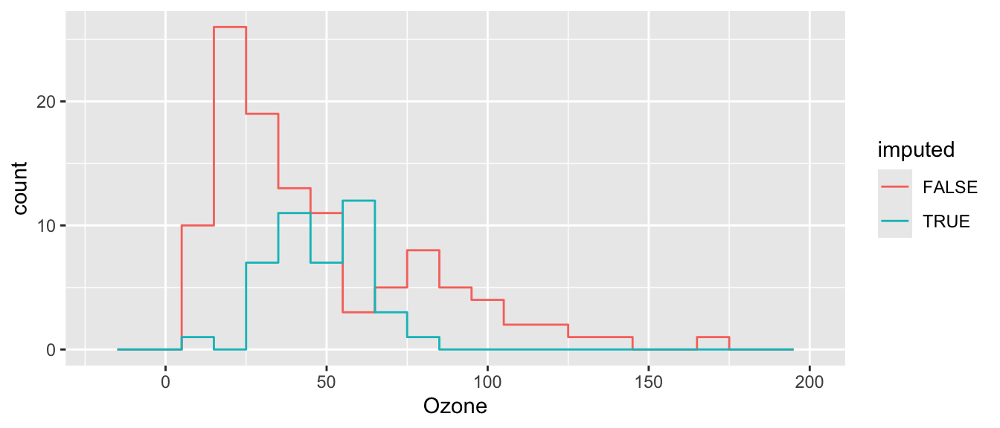
ggplot( cdat, aes(y=Ozone, x=Solar.R, col=imputed) ) +
geom_point() +
labs( y="Ozone (ppb)", x="Solar Radiation (lang)" )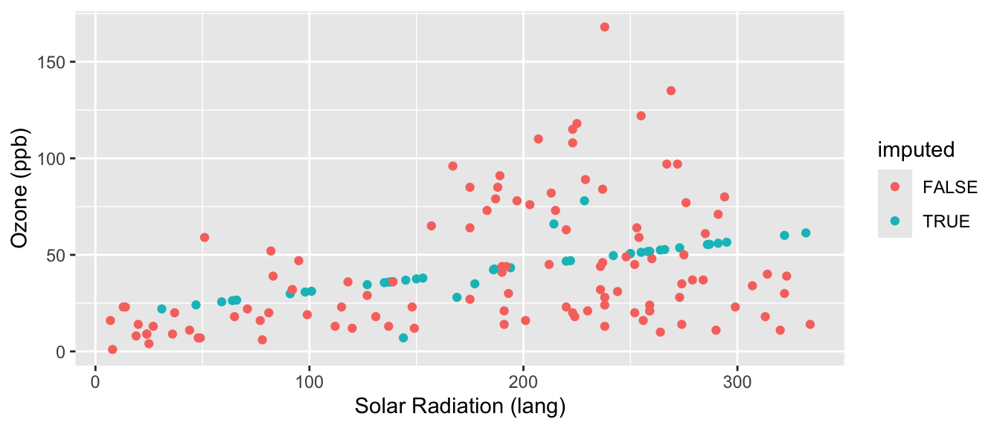
This is better than mean imputation. See how we impute different Ozone for different Solar Radiation values, taking advantage of the information of knowing that they are correlated? But it still is obvious what is mean imputed and what is not. Also, the variance of our imputed values still does not contain the residual variation around the predicted values that we would get in real data. We can do one more enhancement to fix this.
11.5.3 Stochastic regression imputation
We extend regression imputation by randomly drawing observations that look like real ones. See in the two imputations below we get slightly different values for our imputed data.
Here we do it on our mini-dataset and look at the imputed values for our observations with missing values only:
imp <- mice(airqualitysub[,1:2],method="norm.nob",m=1,maxit=1,seed=1)
iter imp variable
1 1 Ozone Solar.R imp$imp$Ozone
1
5 8.09
10 44.58
$Solar.R
1
5 181.2
6 83.7 imp <- mice(airqualitysub[,1:2],method="norm.nob",m=1,maxit=1,seed=4)
iter imp variable
1 1 Ozone Solar.R imp$imp$Ozone
1
5 34.4
10 31.6
$Solar.R
1
5 381
6 260Now let’s do it on the full data and look at the imputed values and compare to our plots above.
imp <- mice(airquality[,1:2],method="norm.nob",m=1,maxit=1,seed=1)
iter imp variable
1 1 Ozone Solar.R cdat = mice::complete( imp )
cdat$imputed = ici( airquality )
ggplot( cdat, aes(x=Ozone, col=imputed) ) +
stat_bin( geom="step", position="identity",
breaks=seq(-20, 200, 10) )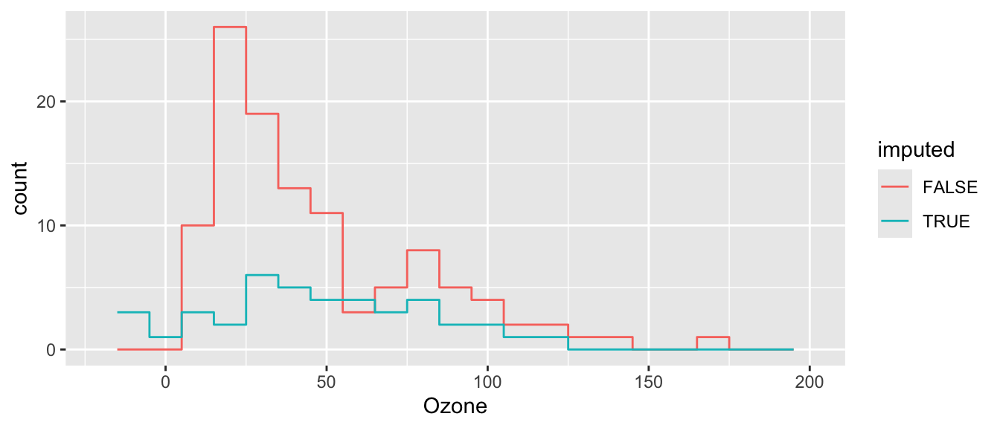
ggplot( cdat, aes(y=Ozone, x=Solar.R, col=imputed) ) +
geom_point() +
labs( y="Ozone (ppb)", x="Solar Radiation (lang)" )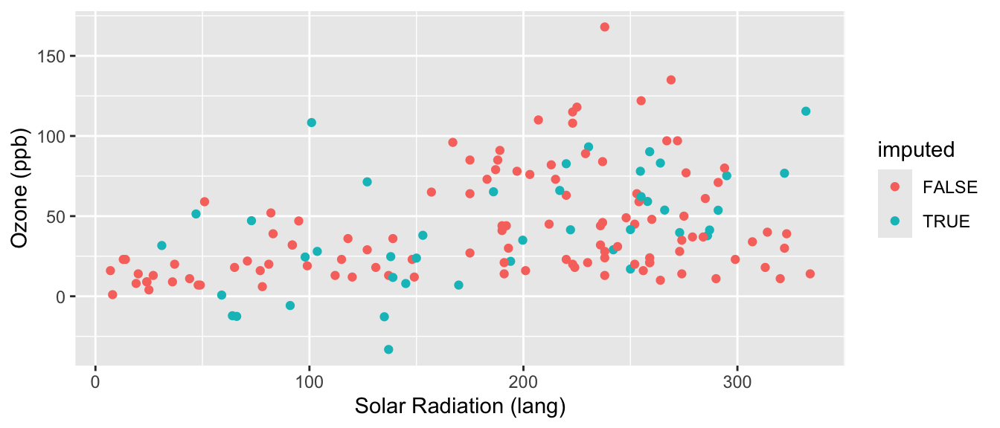
Better, but not perfect. What is better? What is still not perfect?
11.6 Multiple imputation
If missing data is a significant issue in your dataset, then mean or regression imputation can be a bit too hacky and approximate. In these contexts, multiple imputation is the way to go.
We do this as follows:
imp <- mice(airqualitysub, seed=2, print=FALSE)Warning: Number of logged events: 1 impClass: mids
Number of multiple imputations: 5
Imputation methods:
Ozone Solar.R Wind Temp Month Day
"pmm" "pmm" "" "" "" ""
PredictorMatrix:
Ozone Solar.R Wind Temp Month Day
Ozone 0 1 1 1 0 1
Solar.R 1 0 1 1 0 1
Wind 1 1 0 1 0 1
Temp 1 1 1 0 0 1
Month 1 1 1 1 0 1
Day 1 1 1 1 0 0
Number of logged events: 1
it im dep meth out
1 0 0 constant Month imp$imp$Ozone
1 2 3 4 5
5 18 41 28 23 23
10 36 18 36 19 28
$Solar.R
1 2 3 4 5
5 149 99 194 99 19
6 194 19 194 19 19
$Wind
[1] 1 2 3 4 5
<0 rows> (or 0-length row.names)
$Temp
[1] 1 2 3 4 5
<0 rows> (or 0-length row.names)
$Month
[1] 1 2 3 4 5
<0 rows> (or 0-length row.names)
$Day
[1] 1 2 3 4 5
<0 rows> (or 0-length row.names)See multiple columns of imputed data? (We have 5 here.)
First aside: All variables you’ll be using for your model should be included in the imputation model. Notice we included the full dataset in mice, not just the variables with missing values. This way we can account for associations between all the outcome and the predictors in the model we’ll be fitting. Your imputation model can be more complicated than your model of interest. That is, you can include additional variables that predict missing values but will not be part of your final model of interest.
Second aside: All variables in your imputation model should be in the correct functional form! Quadratic, higher order polynomials and interaction terms are just another variable that we need to impute. Although it may seem logical to impute your variables first and then calculate the interaction or non-linear term, this can lead to bias.
Third aside: The ordering of the variables in the dataset you are feeding into mice can make a difference in results and model convergence. Generally, you want to order your variables from least to most missing. Here, we reorder the variables from least to most missing, and obtain different results.
test = airqualitysub[,c(6,5,4,3,2,1)]
head(test) Day Month Temp Wind Solar.R Ozone
1 1 5 67 7.4 190 41
2 2 5 72 8.0 118 36
3 3 5 74 12.6 149 12
4 4 5 62 11.5 313 18
5 5 5 56 14.3 NA NA
6 6 5 66 14.9 NA 28 test.imp <- mice(test, seed=2, print=FALSE)Warning: Number of logged events: 1 test.imp$imp$Day
[1] 1 2 3 4 5
<0 rows> (or 0-length row.names)
$Month
[1] 1 2 3 4 5
<0 rows> (or 0-length row.names)
$Temp
[1] 1 2 3 4 5
<0 rows> (or 0-length row.names)
$Wind
[1] 1 2 3 4 5
<0 rows> (or 0-length row.names)
$Solar.R
1 2 3 4 5
5 194 118 194 313 190
6 118 194 118 118 190
$Ozone
1 2 3 4 5
5 18 23 23 23 41
10 12 8 18 19 8How to get each complete dataset?
## first complete dataset
mice::complete(imp, 1) Ozone Solar.R Wind Temp Month Day
1 41 190 7.4 67 5 1
2 36 118 8.0 72 5 2
3 12 149 12.6 74 5 3
4 18 313 11.5 62 5 4
5 18 149 14.3 56 5 5
6 28 194 14.9 66 5 6
7 23 299 8.6 65 5 7
8 19 99 13.8 59 5 8
9 8 19 20.1 61 5 9
10 36 194 8.6 69 5 10## and our second complete dataset
mice::complete(imp, 2) Ozone Solar.R Wind Temp Month Day
1 41 190 7.4 67 5 1
2 36 118 8.0 72 5 2
3 12 149 12.6 74 5 3
4 18 313 11.5 62 5 4
5 41 99 14.3 56 5 5
6 28 19 14.9 66 5 6
7 23 299 8.6 65 5 7
8 19 99 13.8 59 5 8
9 8 19 20.1 61 5 9
10 18 194 8.6 69 5 10See how they are different? They were randomly imputed. We basically used the stochastic regression thing, above, multiple times.
mice::complete(imp, 1)[ ici(airqualitysub), ] Ozone Solar.R Wind Temp Month Day
5 18 149 14.3 56 5 5
6 28 194 14.9 66 5 6
10 36 194 8.6 69 5 10 mice::complete(imp, 2)[ ici(airqualitysub), ] Ozone Solar.R Wind Temp Month Day
5 41 99 14.3 56 5 5
6 28 19 14.9 66 5 6
10 18 194 8.6 69 5 10On full data:
imp <- mice(airquality, seed=1, print=FALSE)Now we estimate for each imputed dataset using the with() method that, in mice, will do the regression for each completed dataset. See help with.mids.
fit <- with(imp, lm(Ozone ~ Wind + Temp + Solar.R))
fitcall :
with.mids(data = imp, expr = lm(Ozone ~ Wind + Temp + Solar.R))
call1 :
mice(data = airquality, printFlag = FALSE, seed = 1)
nmis :
Ozone Solar.R Wind Temp Month Day
37 7 0 0 0 0
analyses :
[[1]]
Call:
lm(formula = Ozone ~ Wind + Temp + Solar.R)
Coefficients:
(Intercept) Wind Temp Solar.R
-66.2402 -2.8219 1.6134 0.0563
[[2]]
Call:
lm(formula = Ozone ~ Wind + Temp + Solar.R)
Coefficients:
(Intercept) Wind Temp Solar.R
-71.2842 -2.9055 1.6749 0.0633
[[3]]
Call:
lm(formula = Ozone ~ Wind + Temp + Solar.R)
Coefficients:
(Intercept) Wind Temp Solar.R
-66.9511 -2.9322 1.6479 0.0543
[[4]]
Call:
lm(formula = Ozone ~ Wind + Temp + Solar.R)
Coefficients:
(Intercept) Wind Temp Solar.R
-33.8480 -3.6628 1.3244 0.0427
[[5]]
Call:
lm(formula = Ozone ~ Wind + Temp + Solar.R)
Coefficients:
(Intercept) Wind Temp Solar.R
-77.4163 -2.7438 1.7264 0.0663 This can take any function call that takes a formula. So glm, lm, whatever… We can then pool the estimates using the standard theory of combining multiply imputed datasets. The basic idea is to combine the variation/uncertainty of the multiple sets with the average uncertainty we would have for each set if it was truly complete and not imputed.
tab <- summary(pool(fit))
colnames( tab )[1] "term" "estimate" "std.error" "statistic" "df" "p.value" tab[,c(1:3,5)] term estimate std.error df
1 (Intercept) -63.1480 26.6769 13.8
2 Wind -3.0132 0.6831 24.0
3 Temp 1.5974 0.2742 19.6
4 Solar.R 0.0566 0.0222 52.4Aside: You will notice that once we fit our model on the imputed data, with() returned an object of class mira. Mira objects can be pooled to get the pooled estimates, whereas objects of class glm, lm, lmer, etc. cannot be pooled. You will also notice that you cannot use predict with a mira object. To use predict, you can stack the imputed datasets and fit your model on this complete dataset. Parameter estimates generated by pool are the average of the parameter estimates from the model fit on each imputed dataset separately. So your coefficients are fine. However, your SEs will be underestimated. How underestimated your SEs will be depends, to an extent, on how much data is missing and whether it is missing at random.
Our old, sad method:
fit <- lm(Ozone~Wind+Temp+Solar.R,data=airquality,na.action=na.omit)
summary( fit )
Call:
lm(formula = Ozone ~ Wind + Temp + Solar.R, data = airquality,
na.action = na.omit)
Residuals:
Min 1Q Median 3Q Max
-40.48 -14.22 -3.55 10.10 95.62
Coefficients:
Estimate Std. Error t value Pr(>|t|)
(Intercept) -64.3421 23.0547 -2.79 0.0062 **
Wind -3.3336 0.6544 -5.09 1.5e-06 ***
Temp 1.6521 0.2535 6.52 2.4e-09 ***
Solar.R 0.0598 0.0232 2.58 0.0112 *
---
Signif. codes: 0 '***' 0.001 '**' 0.01 '*' 0.05 '.' 0.1 ' ' 1
Residual standard error: 21.2 on 107 degrees of freedom
(42 observations deleted due to missingness)
Multiple R-squared: 0.606, Adjusted R-squared: 0.595
F-statistic: 54.8 on 3 and 107 DF, p-value: <2e-16 round(coef(summary(fit)),3) Estimate Std. Error t value Pr(>|t|)
(Intercept) -64.34 23.055 -2.79 0.006
Wind -3.33 0.654 -5.09 0.000
Temp 1.65 0.254 6.52 0.000
Solar.R 0.06 0.023 2.58 0.011In this case, the missing data estimates are basically the same as the complete case analysis, it appears. We only had 5% missing data though.
11.7 Extensions
11.7.1 Non-continuous variables
Everything shown above can easily be extended to non-continuous variables. The easiest way to do this is using the mice package. It allows you to specify the type of variable you are imputing, e.g. dichotomous or categorical. Mice will automatically detect and handle non-continuous variables. You can also specify these variables yourself. Here is an example using nhanes data (another built-in R dataset).
## load data
data(nhanes2)
head(nhanes2) age bmi hyp chl
1 20-39 NA <NA> NA
2 40-59 22.7 no 187
3 20-39 NA no 187
4 60-99 NA <NA> NA
5 20-39 20.4 no 113
6 60-99 NA <NA> 184## create some missing values for an ordered categorical variable
nhanes2$age[1:5] = NA
head(nhanes2) age bmi hyp chl
1 <NA> NA <NA> NA
2 <NA> 22.7 no 187
3 <NA> NA no 187
4 <NA> NA <NA> NA
5 <NA> 20.4 no 113
6 60-99 NA <NA> 184## impute 5 datasets
imp.cat <- mice(nhanes2, m = 5, print=FALSE)
full.cat = mice::complete(imp.cat) ## print the first imputed data set
head(full.cat) age bmi hyp chl
1 40-59 21.7 yes 187
2 40-59 22.7 no 187
3 20-39 27.5 no 187
4 60-99 24.9 yes 218
5 40-59 20.4 no 113
6 60-99 24.9 yes 184We can check what imputation method mice used for each variable:
imp.cat$method age bmi hyp chl
"polyreg" "pmm" "logreg" "pmm" We can see that mice used the polyreg imputation method for the variable age, which means it treated it as an unordered categorical variable. But this is an ordered variable: higher values categories signified older age. We can manually force mice to treat age as an ordered categorical variable. We will keep the imputation methods for the remaining variables the same.
imp.cat2 <- mice(nhanes2, meth=c("polr","pmm","logreg","pmm"), m=5, print=FALSE)
head(mice::complete(imp.cat2, 1)) age bmi hyp chl
1 40-59 27.5 yes 184
2 60-99 22.7 no 187
3 60-99 20.4 no 187
4 20-39 35.3 no 184
5 40-59 20.4 no 113
6 60-99 22.7 no 184 imp.cat2$method age bmi hyp chl
"polr" "pmm" "logreg" "pmm" 11.7.2 Multi-level data
Multilevel data gets more tricky: should we impute taking into account cluster? How do we do that?
For an initial pass, I would recommend simply doing regression imputation ignoring cluster/grouping, and then adding in that dummy variable of whether a value is imputed.
11.7.3 Longitudinal data
With longitudinal data we can often use all our data even for individuals with missing data on the outcome, if we assume data are MAR (“Missing at Random”). MAR means that conditional on the observed data, missingness may depend on any observed data, but not on unobserved data. we explore our missing data on individuals over time and on outcomes as above to get a sense of whether MAR is a reasonable assumption or not. Then lmer basically handles the rest for us, as far as we have enough observations per individual, on average, to estimate the number of random effects we are trying to estimate. With respect to missing data on covariates or predictors, you can handle those with one of the methods described above.
Here we show how to explore missing data in longitudinal analysis using data on toenail detachment, which you will see in the unit on generalized MLMs. The data is from a RCT where patients were getting a different type of drug to prevent toenail detachment (the outcome).
## load data
toes = foreign::read.dta( "data/toenail.dta" )First, let’s look at how many times patients were observed.
## how many time points per patient?
table( table( toes$patient ) )
1 2 3 4 5 6 7
5 3 7 6 10 39 224 We have 224 patients observed at all 7 time points, and the rest of the patients are observed at fewer time points, between 1 and 6.
## define function
summarise.patient = function( patient ) {
pat = rep( ".", 7 )
pat[ patient$visit ] = 'X'
paste( pat, collapse="" )
}
## For each patient, this code makes a string of "."
## then it replaces all dots with an "X" if we have data for that visit
## summarize missingness
miss = toes %>% group_by( patient ) %>%
do( pattern = summarise.patient(.) ) %>%
unnest(cols = c(pattern))
## Group the data by patient
## Then use the do() command on each chunk of our dataframe
## The "." means "the chunk" (it is a pronoun, essentially).
## This code creates a list of character vectors
## The unnest() takes our character vector out of this list made by "do"
head( miss )# A tibble: 6 × 2
patient pattern
<dbl> <chr>
1 1 XXXXXXX
2 2 XXXXXX.
3 3 XXXXXXX
4 4 XXXXXXX
5 6 XXXXXXX
6 7 XXXXXXXHere we see the different patterns of missing outcomes, i.e., when patients leave and if they come back. When patients leave and never come back, regardless of the time point (see lines 4 and 5), we have monotone missingness.
## sort missing patterns in decreasing order
## starting with no missingness
sort( table( miss$pattern ), decreasing=TRUE )
XXXXXXX XXXXX.X XXXX.XX XXX.... X...... XXXXX.. XXXX... XX..... XXX.XXX XXXXXX.
224 21 10 6 5 5 4 3 3 3
XXX.X.. XXXX..X X.XXXXX XX..X.. XX.XXX. XX.XXXX XXX..XX XXX.X.X
2 2 1 1 1 1 1 1 ## summarize number of data patterns
miss = miss %>% group_by( pattern ) %>%
summarise( n=n() )
miss = arrange( miss, -n )
miss# A tibble: 18 × 2
pattern n
<chr> <int>
1 XXXXXXX 224
2 XXXXX.X 21
3 XXXX.XX 10
4 XXX.... 6
5 X...... 5
6 XXXXX.. 5
7 XXXX... 4
8 XX..... 3
9 XXX.XXX 3
10 XXXXXX. 3
11 XXX.X.. 2
12 XXXX..X 2
13 X.XXXXX 1
14 XX..X.. 1
15 XX.XXX. 1
16 XX.XXXX 1
17 XXX..XX 1
18 XXX.X.X 1## percent missing data (224 complete cases)
224 / sum( miss$n )[1] 0.762 ## 76% of patients with complete dataSecond, we look at patterns of missing outcomes. The outcome here is toenail detachment.
## reshape data to wide
dat.wide = reshape( toes2, direction="wide", v.names="outcome",
idvar="patient", timevar = "visit" )
head( dat.wide ) patient treatment Tx outcome.1 outcome.2 outcome.3 outcome.4
1 1 1 Itraconazole 1 1 1 0
8 2 0 Terbinafine 0 0 1 1
14 3 0 Terbinafine 0 0 0 0
21 4 0 Terbinafine 1 0 0 0
28 6 1 Itraconazole 1 1 1 0
35 7 1 Itraconazole 0 0 0 0
outcome.5 outcome.6 outcome.7
1 0 0 0
8 0 0 NA
14 0 0 1
21 0 0 0
28 0 0 0
35 1 1 1## looking at missing data with mice package
md.pattern( dat.wide )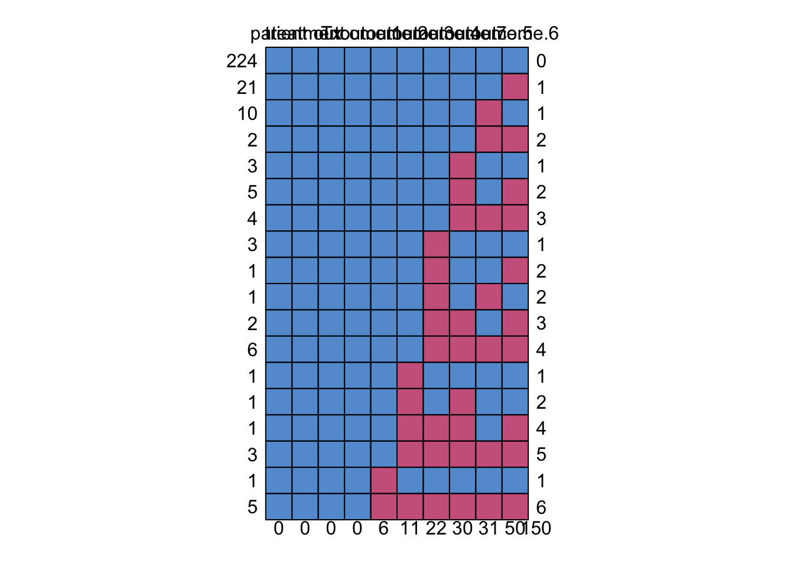
patient treatment Tx outcome.1 outcome.2 outcome.3 outcome.4 outcome.7
224 1 1 1 1 1 1 1 1
21 1 1 1 1 1 1 1 1
10 1 1 1 1 1 1 1 1
2 1 1 1 1 1 1 1 1
3 1 1 1 1 1 1 1 0
5 1 1 1 1 1 1 1 0
4 1 1 1 1 1 1 1 0
3 1 1 1 1 1 1 0 1
1 1 1 1 1 1 1 0 1
1 1 1 1 1 1 1 0 1
2 1 1 1 1 1 1 0 0
6 1 1 1 1 1 1 0 0
1 1 1 1 1 1 0 1 1
1 1 1 1 1 1 0 1 0
1 1 1 1 1 1 0 0 0
3 1 1 1 1 1 0 0 0
1 1 1 1 1 0 1 1 1
5 1 1 1 1 0 0 0 0
0 0 0 0 6 11 22 30
outcome.5 outcome.6
224 1 1 0
21 1 0 1
10 0 1 1
2 0 0 2
3 1 1 1
5 1 0 2
4 0 0 3
3 1 1 1
1 1 0 2
1 0 1 2
2 1 0 3
6 0 0 4
1 1 1 1
1 1 1 2
1 1 0 4
3 0 0 5
1 1 1 1
5 0 0 6
31 50 150## Another way to generating missingness patterns is to create a function
## This function takes the visits and outcomes and puts a 1 or 0 if there is an
## outcome and a dot if missing.
make.pat = function( visit, outcome ) {
pat = rep( ".", 7 )
pat[ visit ] = outcome
paste( pat, collapse="" )
}
## call our function on all our patients.
outcomes = toes %>% group_by( patient ) %>%
summarise( tx = Tx[[1]],
num.obs = n(),
num.detach = sum( outcome ),
out = make.pat( visit, outcome ) )
head( outcomes, 20 )# A tibble: 20 × 5
patient tx num.obs num.detach out
<dbl> <fct> <int> <dbl> <chr>
1 1 Itraconazole 7 3 1110000
2 2 Terbinafine 6 2 001100.
3 3 Terbinafine 7 1 0000001
4 4 Terbinafine 7 1 1000000
5 6 Itraconazole 7 3 1110000
6 7 Itraconazole 7 3 0000111
7 9 Itraconazole 7 0 0000000
8 10 Terbinafine 7 0 0000000
9 11 Itraconazole 7 4 1111000
10 12 Terbinafine 7 3 0100110
11 13 Terbinafine 7 4 1111000
12 15 Itraconazole 6 2 11000.0
13 16 Itraconazole 6 1 0000.10
14 17 Terbinafine 6 4 11110.0
15 18 Terbinafine 6 1 001.000
16 19 Itraconazole 7 0 0000000
17 20 Terbinafine 6 0 000.000
18 21 Itraconazole 3 2 110....
19 22 Terbinafine 7 3 1110000
20 23 Itraconazole 7 0 0000000## how many folks have no detachments?
table( outcomes$num.detach )
0 1 2 3 4 5 6 7
163 25 25 31 30 8 4 8 163 / nrow(outcomes)[1] 0.554## how many always detached?
sum( outcomes$num.detach == outcomes$num.obs )[1] 1616 / nrow(outcomes)[1] 0.054411.8 Further reading
Some further reading on handling missing data. But this is really a course into itself.
Gelman & Hill Chapter 25 has a more detailed discussion of missing data imputation.
White IR, Royston P, Wood AM. Multiple imputation using chained equations: issues and guidance for practice. Statistics in Medicine 2011;30: 377-399.
Graham, JW, Olchowski, AE, Gilreath, TD, 2007. How Many Imputations are Really Needed? Some Practical Clarifications of Multiple Imputation Theory 206–213. https://doi.org/10.1007/s11121-007-0070-9
van Buurin S, Groothuis-Oudshoorn K, MICE: Multivariate Imputation by Chained Equations. Journal of Statistical Software. 2011;45(3):1-68.
Grund S, Lüdtke O, Robitzsch A. Multiple Imputation of Missing Data for Multilevel Models: Simulations and Recommendations. DOI: 10.1177/1094428117703686
11.9 Appendix: More about the mice package
The mice package gives back a very complex object that has a lot of information about how values were imputed, which values were imputed, and so forth. In the following we unpack the imp variable from above a bit more.
Looking at the imputation object
In the following code, we look at the object we get back from mice(). It has lots of parts that we can peek into.
First, the imp list inside of imp stores all of our newly imputed data. It is itself a list of each variable with their imputed values:
imp$imp$Ozone
1 2 3 4 5
5 6 19 14 8 14
10 12 12 7 23 23
25 14 19 14 19 14
26 37 18 32 32 18
27 11 1 18 13 18
32 65 45 13 28 29
33 22 36 12 18 16
34 13 18 1 13 13
35 63 35 45 52 71
36 23 39 20 59 96
37 24 16 12 34 18
39 64 135 85 80 91
42 115 76 115 37 91
43 66 122 78 64 122
45 44 28 45 23 16
46 23 45 46 45 35
52 20 52 63 47 47
53 59 59 48 115 37
54 40 16 35 37 63
55 40 35 48 39 49
56 23 39 59 59 16
57 44 52 40 52 20
58 30 30 27 14 23
59 45 32 16 16 46
60 44 27 34 28 30
61 89 64 80 37 64
65 16 16 14 23 29
72 46 52 65 45 35
75 35 64 71 18 78
83 20 40 71 46 59
84 28 63 37 29 63
102 115 78 78 37 66
103 46 29 31 23 40
107 16 30 13 14 22
115 41 12 44 7 22
119 50 78 122 85 50
150 24 12 27 21 12
$Solar.R
1 2 3 4 5
5 7 313 82 13 314
6 322 187 222 24 238
11 66 274 139 135 112
27 20 24 7 238 193
96 175 223 284 197 220
97 51 139 274 237 98
98 98 203 220 188 276
$Wind
[1] 1 2 3 4 5
<0 rows> (or 0-length row.names)
$Temp
[1] 1 2 3 4 5
<0 rows> (or 0-length row.names)
$Month
[1] 1 2 3 4 5
<0 rows> (or 0-length row.names)
$Day
[1] 1 2 3 4 5
<0 rows> (or 0-length row.names) str( imp$imp )List of 6
$ Ozone :'data.frame': 37 obs. of 5 variables:
..$ 1: int [1:37] 6 12 14 37 11 65 22 13 63 23 ...
..$ 2: int [1:37] 19 12 19 18 1 45 36 18 35 39 ...
..$ 3: int [1:37] 14 7 14 32 18 13 12 1 45 20 ...
..$ 4: int [1:37] 8 23 19 32 13 28 18 13 52 59 ...
..$ 5: int [1:37] 14 23 14 18 18 29 16 13 71 96 ...
$ Solar.R:'data.frame': 7 obs. of 5 variables:
..$ 1: int [1:7] 7 322 66 20 175 51 98
..$ 2: int [1:7] 313 187 274 24 223 139 203
..$ 3: int [1:7] 82 222 139 7 284 274 220
..$ 4: int [1:7] 13 24 135 238 197 237 188
..$ 5: int [1:7] 314 238 112 193 220 98 276
$ Wind :'data.frame': 0 obs. of 5 variables:
..$ 1: logi(0)
..$ 2: logi(0)
..$ 3: logi(0)
..$ 4: logi(0)
..$ 5: logi(0)
$ Temp :'data.frame': 0 obs. of 5 variables:
..$ 1: logi(0)
..$ 2: logi(0)
..$ 3: logi(0)
..$ 4: logi(0)
..$ 5: logi(0)
$ Month :'data.frame': 0 obs. of 5 variables:
..$ 1: logi(0)
..$ 2: logi(0)
..$ 3: logi(0)
..$ 4: logi(0)
..$ 5: logi(0)
$ Day :'data.frame': 0 obs. of 5 variables:
..$ 1: logi(0)
..$ 2: logi(0)
..$ 3: logi(0)
..$ 4: logi(0)
..$ 5: logi(0) str( imp$imp$Ozone )'data.frame': 37 obs. of 5 variables:
$ 1: int 6 12 14 37 11 65 22 13 63 23 ...
$ 2: int 19 12 19 18 1 45 36 18 35 39 ...
$ 3: int 14 7 14 32 18 13 12 1 45 20 ...
$ 4: int 8 23 19 32 13 28 18 13 52 59 ...
$ 5: int 14 23 14 18 18 29 16 13 71 96 ...We see that Ozone and Solar.R have imputed values, and the other variables do not.
Next, we see two missing observations in our original data and then see the two imputed values for these two missing observations.
airqualitysub$Ozone [1] 41 36 12 18 NA 28 23 19 8 NA imp$imp$Ozone[,1] [1] 6 12 14 37 11 65 22 13 63 23 24 64 115 66 44 23 20 59 40
[20] 40 23 44 30 45 44 89 16 46 35 20 28 115 46 16 41 50 24We can make (the hard way) a vector of Ozone by plugging our missing values into the original data. But the complete() method, above, is preferred.
oz = airqualitysub$Ozone
oz[ is.na( oz ) ] = imp$imp$Ozone[,1]Warning in oz[is.na(oz)] = imp$imp$Ozone[, 1]: number of items to replace is
not a multiple of replacement length oz [1] 41 36 12 18 6 28 23 19 8 12What else is there in imp?
names(imp) [1] "data" "imp" "m" "where"
[5] "blocks" "call" "nmis" "method"
[9] "predictorMatrix" "visitSequence" "formulas" "post"
[13] "blots" "ignore" "seed" "iteration"
[17] "lastSeedValue" "chainMean" "chainVar" "loggedEvents"
[21] "version" "date" What was our imputation method?
imp$method Ozone Solar.R Wind Temp Month Day
"pmm" "pmm" "" "" "" "" Mean imputation for each variable with missing values. Later this will say other thing.
What was used to impute what?
imp$predictorMatrix Ozone Solar.R Wind Temp Month Day
Ozone 0 1 1 1 1 1
Solar.R 1 0 1 1 1 1
Wind 1 1 0 1 1 1
Temp 1 1 1 0 1 1
Month 1 1 1 1 0 1
Day 1 1 1 1 1 011.10 Appendix: The amelia package
Amelia is another multiple imputation and missing data package. We do not prefer it, but have some demonstration code in the following, for reference.
library(Amelia)Warning: package 'Rcpp' was built under R version 4.3.3For missingness we can make the following:
missmap(airquality)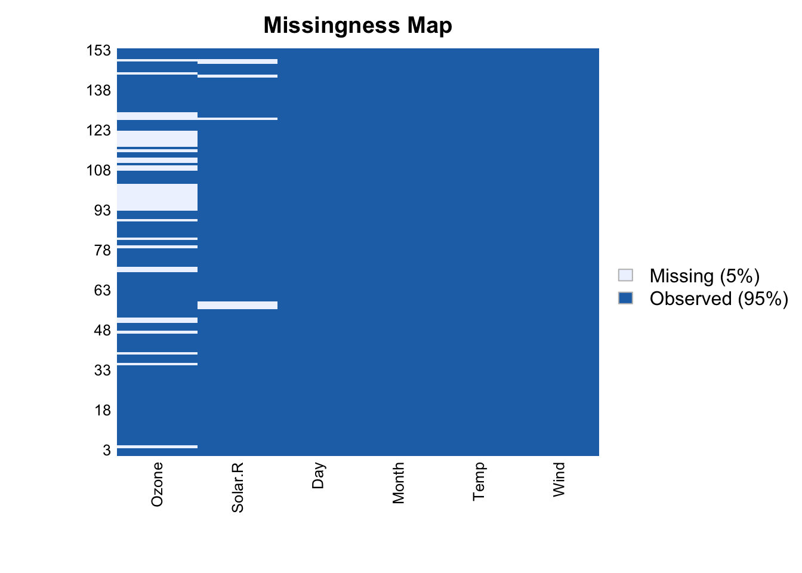
Each row of the plot is a row of the data, and missing values are shown in brown. But ugly! And hard to see any trends in the missingness.
You can use the Amelia package to do mean imputation.
library(dplyr)
## exclude variables that do not vary
a.airquality = airquality %>% dplyr::select(-Month)
## impute data
a.imp <- amelia(a.airquality, m=5)-- Imputation 1 --
1 2 3 4 5 6
-- Imputation 2 --
1 2 3 4 5 6
-- Imputation 3 --
1 2 3 4 5
-- Imputation 4 --
1 2 3 4 5 6 7
-- Imputation 5 --
1 2 3 4 5 6 a.imp
Amelia output with 5 imputed datasets.
Return code: 1
Message: Normal EM convergence.
Chain Lengths:
--------------
Imputation 1: 6
Imputation 2: 6
Imputation 3: 5
Imputation 4: 7
Imputation 5: 6We can plot our imputed values against our observed values to check that they make sense. We will do this for just one of five datasets we just imputed using Amelia.
## put imputed values from the third dataset in an object
one_imp <- a.imp$imputations[[3]]$Ozone
## make object with observed values
## from observations without missing Ozone values
obs_data <- a.airquality$Ozone
## make a plot overlaying observed and imputed values
hist(one_imp[is.na(obs_data)], prob=TRUE, xlab="Ozone",
main="Histogram of Imputed Values in 3rd Imputation \nCompared to Density in Observed Data",
col="cyan", ylim=c(0,0.02))
lines(density(obs_data[!is.na(obs_data)]), col="darkblue", lwd=2)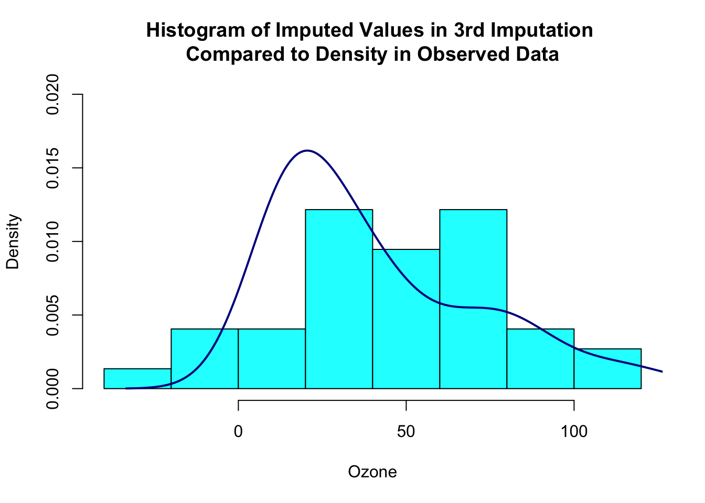
You can also do multiple imputation in Amelia. However, Amelia does not have an easy way to combine the estimates from the imputed datasets (no analogue of with() in mice). You can write a function that fits your model of interest in each imputed dataset and then use a package like mitools to pool the estimates and variances.
Much easier to use mice!
Aside: A more important limitation of Amelia is that the algorithm it uses to impute missing values assumes multivariate normality, which is often questionable, especially when you have binary variables.